Median approval time reduced from days to ≤60 min through AI insights, skim-friendly design and progressive disclosure.
B2B . Cybersecurity (IAM, IGA)
250+ Customers
Monday.com, Whoop, Razorpay, Uber,
BambooHR, MoEngage, Whatfix, Kaizen,
Assured Allies, Arctic Wolf
Target audience
Mid Market, Enterprise
My role
- Partnered with the PM on the PRD
- Quantitative research
- Led design end to end
Team
- Product Manager
- Engineers
- Co-founder (CTO)
The Why and Who of Access Requests
Access Request
Why do businesses care?
Enterprise customers look for trust certificates. Trust
certificates are earned through IT Security audits.
Audits succeed when an org can prove, who has access to
what software, repo, folders etc and why.
Who are the primary stakeholders?
Employee:
Requests access to software, repo, folder etc.
Approver:
Direct manager, Skip level managers, App owner, IT/Security
team/ Compliance / Legal
What we were solving for this time
Faster decision making
Reduction in median approval time. Bringing down
decision making time from days to minutes.
Confident decision making
Reduction in post-approval revocations. Fewer
approvals get reversed later.
Research Done to Assess Current Reality
Quantitative and Qualitative Research
Competitor research
Question:
How do other products
present risk and context?
Looked at:
Layout, interaction pattern,
how recommendations are
framed, how decisions are
prompted.
Customer voice
Question:
What do customers say?
Looked at:
20 statements and asks from
support calls at 11 companies,
pulled from Pulse, a customer
intelligence platform. We
grouped them into 5 themes.
Heatmap analysis
Question:
What do approvers actually
do?
Looked at:
Clickmap, scrollmap in
Datadog RUM heatmaps
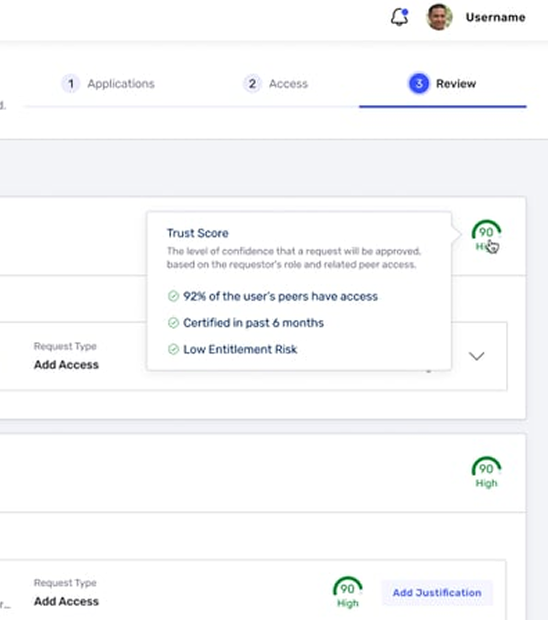
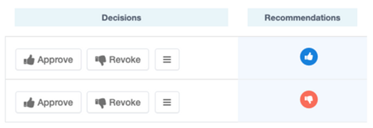
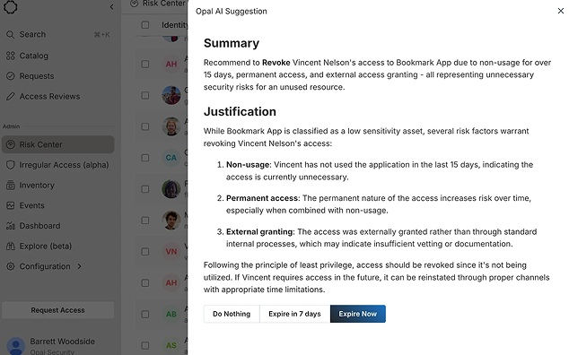
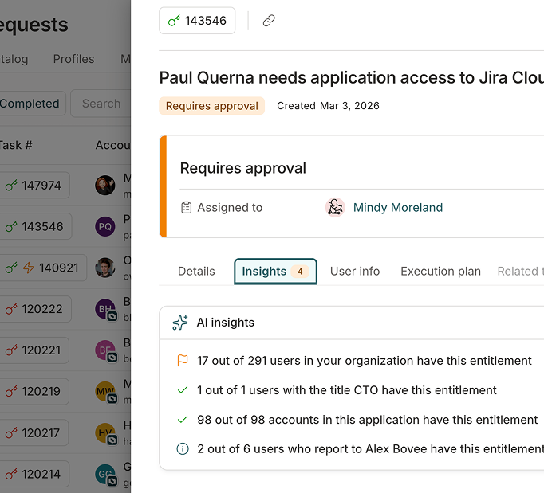
Researched 9 competitors
Studied layout and visual hierarchy, interaction pattern, content structure, decision framing etc
Key Takeaways - Competitor research
Layout, visual
hierarchy
Insight is shown as a card
or modal, not a full page,
keeping the approver in
flow
Bullet points used in the
layout, not paragraphs,
for scannability
A highlighted icon or
pre-selected state used
to nudge the approver
softly
Interaction
pattern
Two-step interaction
only, context shown first,
then the decision action
Approve or reject
buttons kept close to the
context, no scrolling
needed
Content
structure
Context has 3 to 4 strong
pointers only, not the full
list
Numbers placed early in
the copy, within the first
4 to 5 words, for quick
scanning
Decision
framing
Packaged as a
recommendation, not as
a directive
Copy nudges approver
toward two actions i.e
Decide or Prioritize
AI flags risk at two levels:
the decision (approve or
deny) and the context
(why it's risky)
Historical & audit context (6)
"The approver needs context regarding the current user access."
– BBC
"Include access history on the approval screen."
– Radicant Bank
"The approver should view the history of access changes."
– Kasada
"Show previous decisions made on approvals."
– J.G. Wentworth
"Indicate if access was recently certified."
– BBC
"The approver needs a consolidated view of access."
– Arctic Wolf
Risk visibility (5)
"Display risk level prior to approval."
– Arctic Wolf
"Highlight permissions that are excessive."
– Somos
"Alert for violations during the approval process."
– OakNorth Bank
"Visually highlight roles that are high-risk."
– Arctic Wolf
"Flag unusual combinations of access."
– Moonfare
Decision support (4)
"Show insights comparing peers."
– Lunar Fare
"Provide a summary of the impact analysis."
– Radicant Bank
"Implement a recommendation engine."
– Paidy
"The approval screen lacks support for decision-making."
– Kasada
Usage & entitlement data (3)
"Display details of last access usage."
– Paidy Solutions
"Provide a summary of entitlement counts."
– Somos
"Provide a summary of the user’s critical access."
– Harry’s
People context (2)
"Provide department context before granting approval."
– Harry’s
"Include job title in the approval notification."
– OakNorth Bank
20 customer statements. 11 companies.
5 themes emerged. Double-confirms our learnings from competitor research, and it helped us prioritize feature scope.
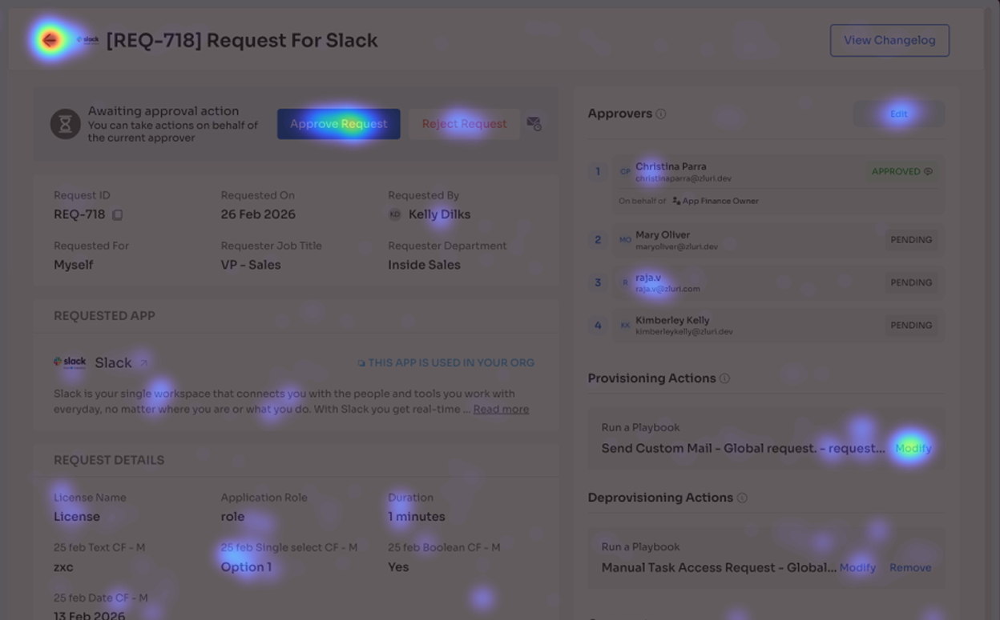
A decision auto-redirects to the listing page, so back clicks mean no decision. Heat on Back button is significantly higher than Approve. People leave undecided.
Heatmap analysis key takeaway
Current reality
Request Submitted
Priya (Designer) requests access to GitHub Repo
Minimal reasoning
A few words to one or two-line reasoning.
Approver Unsure
Designer wants repo access? Is it normal? Is it risky?"
Manual digging
Slack pings, HRIS lookup, a ping to the eng lead etc.
Gut-feel decision
Approves based on one Slack reply, with no supporting data.
No trail left behind
No record of why it was approved, weak audit defense.
Current design was built for an approver who doesn't exist.
Request Submitted
Priya (Designer) requests access to GitHub Repo
Detailed Reasoning
Reason written in great detail + supporting docs attached
Familiar Requestor
Expected to know requestor.
Knows What's Normal
Expected to know what’s normal for this role.
Spots Risk unaided
Expected to catch most risk on their own
Sound Decision
Expected to get it right, majority of the time.
Design Begins
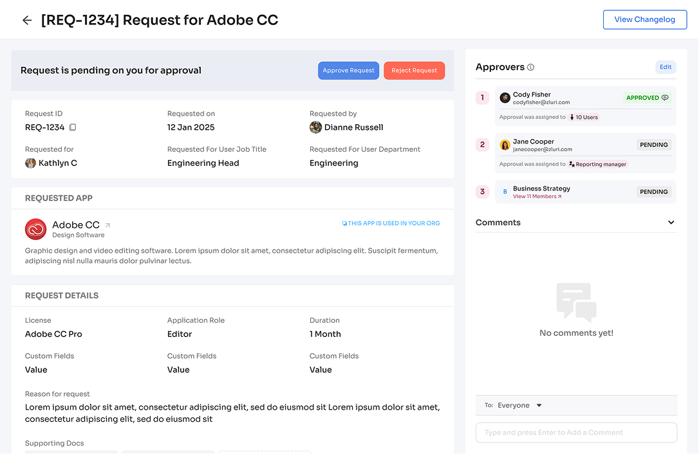
Two clear goals
1. Faster, confident decisions
- About 60 minutes or under
- About deciding with data
2. Adopting new design language
- Legacy design, outdated and untidy, made approvers hunt for context
- It stretched with the screen, so white space distracted and information scattered
- Scattered information slows comprehension and findability, working against goal 1
Insights 1
Insights 2
Insights 3
Building Blocks of AI Insights
- Raw data becomes insights.
- Related insights are grouped.
- Only 3-5 decision-critical groups feed the summary.
Initial Concepts of AI Insights Panel
Low-Fidelity AI Prototype
Iteration 1: AI prototype
Team feedback on
initial concept
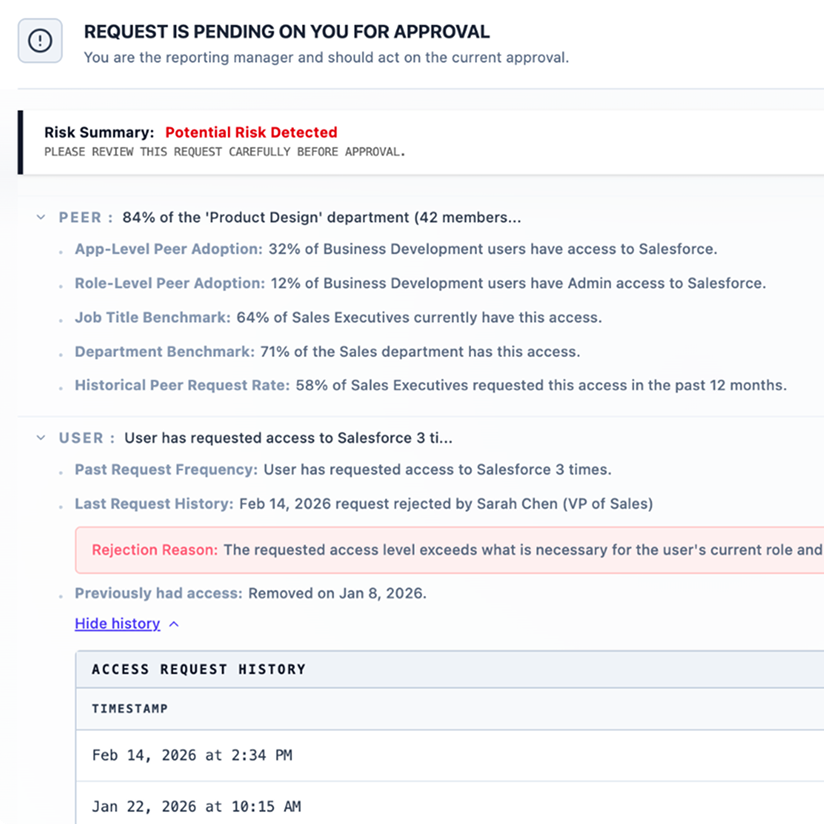
“It's too much info.”
“If we trust the summary, why show the breakdown upfront?”
“Not every group is alarming. Why weigh them equally?”
“Risk at group level or insight level?”
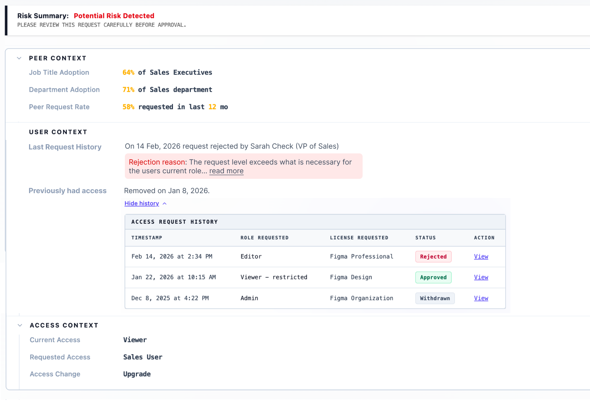
Iteration 2: AI prototype
Iteration after team
feedback
What happened in between
Over the next 2 days, technical, product and design teams worked through the open questions.
What changed
Three groups (Peer, User, Access) replace one long list. Each row is a label and a value, with the number first.
A question debated at length.
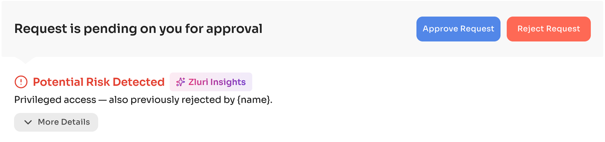
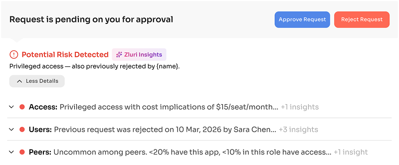
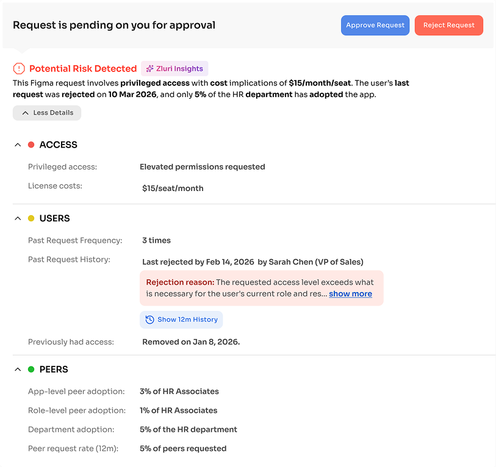
“What should be our default view?”
Product, Design and Engineering debates
Mid-fidelity 1: Risk summary only
Mid-fidelity 2: Risk summary + top concerns
Mid-fidelity 3: Risk summary + all facts
Final decision
Lead with risk. Facts on demand.
Principle driving the decision
The AI synthesizes the risk. The approver makes the call.
The real ROI of AI is synthesis. If approvers must read every fact to reach a conclusion, the AI has added nothing.
Detailing the Experience in the
New Design Language
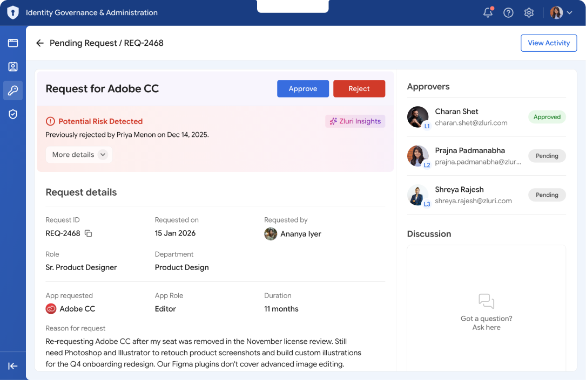
Before & After
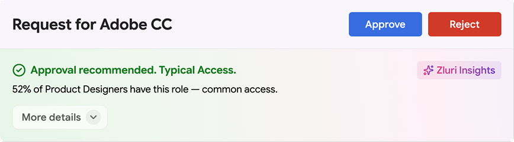
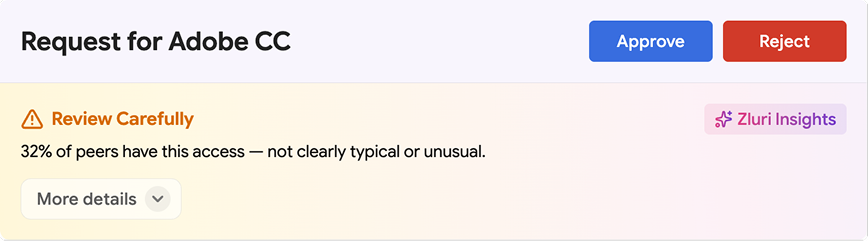
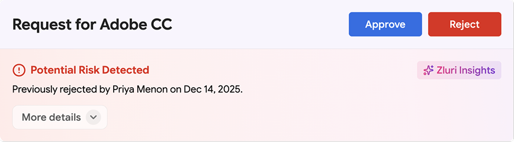
Color signals the
attention needed before
anything is read.
Instant risk signaling
Green, amber and red register before the
text does.
Lower cognitive effort
Approvers stop asking "How much time
should I spend here?" Over time, they build
an instinct to move fast or dig deeper.
Progressive
disclosure
Risk summary first,
facts on demand
“More details” CTA
turns into facts panel
Top concerns,
shown upfront
Each group shows its
strongest concern. The
rest is one click away.
Faster on routine requests
One summary and one reason.
Routine requests don't turn
into an investigation.
Know the source, then decide
The AI badge is familiar. It signals
a machine-made summary, so the
approver's judgment still counts.
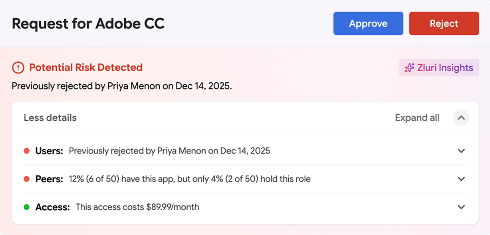
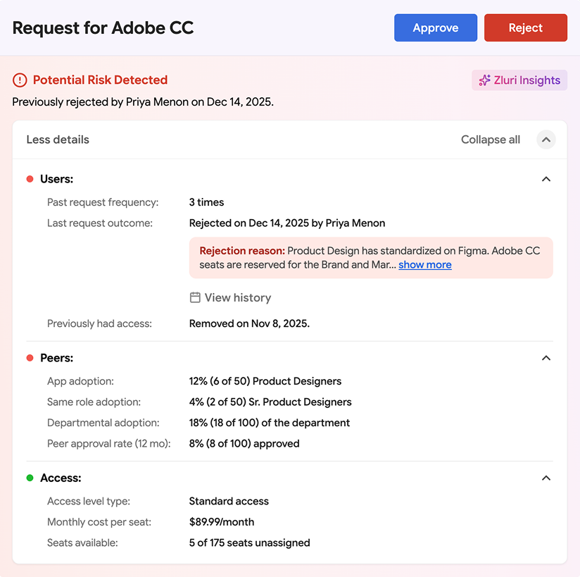
Designed to be read fast
Less to read, faster to decide.
Competitors state risks in sentences. We state in label-value pairs.
Fact placed consistently build muscle memory.
Facts sits in the same spot across tickets. Time to find a fact drops with over time.
Words added, only if it helps.
Values lead with the number. Extra words stay only when they add meaning.
The Shipped Designs
The final versions, in context
Final design 1: Risk summary first
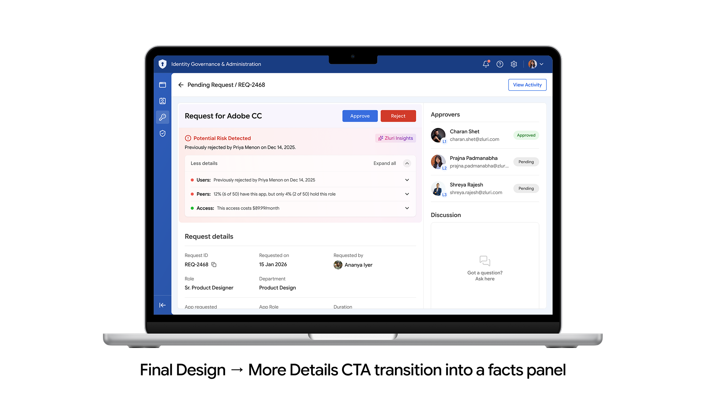
Final design 2: “More details” opens the facts panel
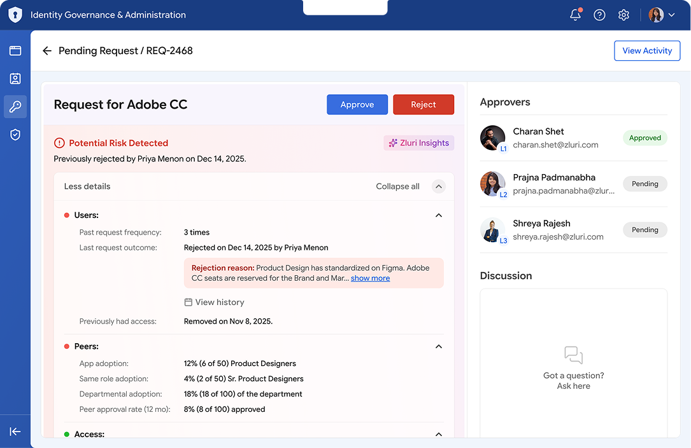
Final design 3: Grouped insights with facts open
Impact
Decisions in 60 min or less, down from days.
Faster Decision Making
50-70% fewer sessions
On 82% of request tickets. Approvers get what they
need early in the process.
60 min or less to decide
Median time varies by risk type (low, medium, high)
Confident Decision Making
Insights reused in decision reasons
Approvers put an insight statement behind their
decision.